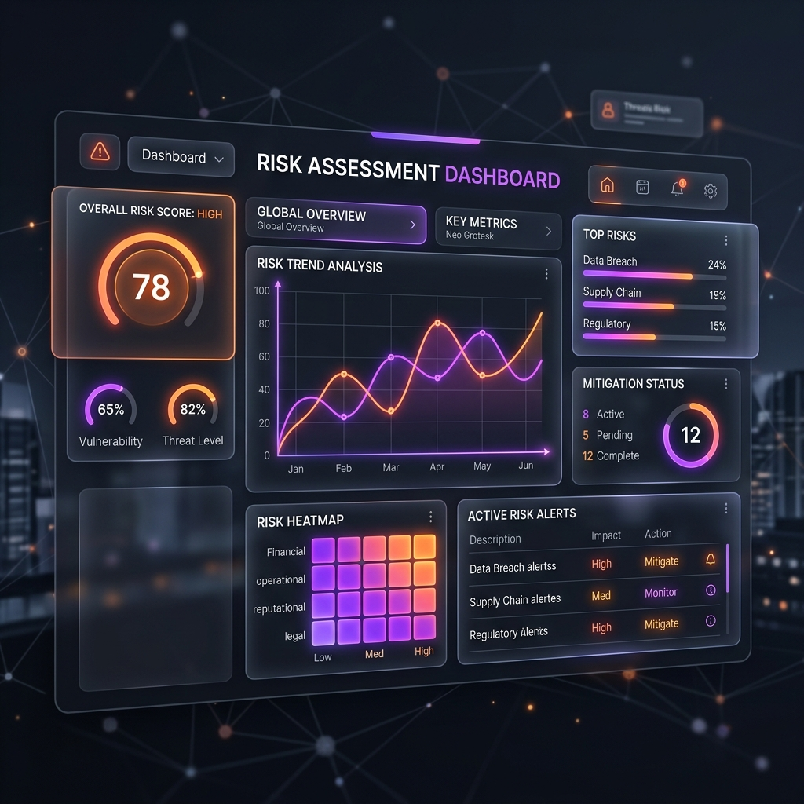

Threat Modeling for Autonomous Systems: A Guide to Secure AI Workflows

Building secure AI workflows is fundamentally different from securing traditional static web apps. The non-deterministic nature of large language models means traditional penetration testing alone cannot reveal all structural safety gaps. To prepare autonomous agents for enterprise deployment, engineers must construct a comprehensive threat model mapping the pathways of prompt injection, target drift, privilege escalation, and execution runaway.
The Autonomous Threat Vectors
In traditional security models, user inputs are validated against strict SQL or JSON parsing patterns. In autonomous systems, however, input is natural language, which can easily change the system's operational instructions. We divide the primary threat areas into three layers:
- Data Ingestion: The ingestion of untrusted external content (e.g., scraping an email attachment or reading a website search query) containing hidden instructions targeting the LLM (Indirect Prompt Injection).
- Intent Generation: The logic phase where the model translates natural language commands to API requests, where prompt manipulation can cause semantic target drift.
- Action Execution: The backend gateway triggering database writes or network calls, where missing circuit breakers can allow a runaway loop to trigger infinite retries.
Designing the Threat Model Template
A threat model acts as a security review checklist. When assessing a new AI integration, developers trace user prompts through each microservice boundary, checking that every node has a corresponding validation safeguard.
# Conceptual secure pipeline routing diagram
[User Command]
│
▼
[Input Sanitizer] ──► (Verify length and remove malicious code entities)
│
▼
[LLM Reasoning Engine] ──► (Generates proposed JSON payload intent)
│
▼
[Deterministic Validator] ──► (Verify semantic hash, whitelist bounds, and limits)
│
▼
[Action Gateway] ──► (Triggers system action with secure tokens)Key Defense Strategies
- Input Redaction: Mask personal metadata and structure incoming text inputs before sending them to reasoning APIs.
- Cryptographic Hash Signatures: Anchor proposed execution parameters to the client-signed semantic representation of the user's initial command.
- Process Sandboxing: Restrict agent runtimes within isolated containers with strict network firewalls to prevent lateral access to internal company servers.
Defense-in-Depth for Enterprise Workflows
By mapping out vulnerabilities and implementing strict validation boundaries at every execution layer, organizations can secure their AI workflows. A defensive, threat-aware architecture ensures that even if an agent is compromised, the blast radius is neutralized immediately.
Enterprise M&A Inquiry
For technical due diligence or architectural deep-dives into our zero-trust framework, please request access to our secure data-room.
Request Data-Room Access